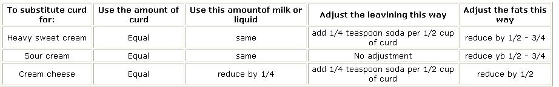

How To Cook With Goats: A Milk Clabber
Clabber cooking and preparation ideas, including recipes for chocolate chip cookies, clabber corn bread, clabber coffee cake, streusel topping, baking powder biscuits.
by: Dokus Cuddy
January/February 1976
Our "happy homestead herd" of goats provides us with so much raw milk for drinking and cooking, that-for several months now-I've been experimenting with different ways of using the unique product. My most interesting investigation, I feel, has centered around clabbering (the process whereby raw milk separates naturally into curds and whey) and I've come up with some results that would have improved Little Miss Muffet's diet considerably.
As you probably know, fats-in the form of shortenings and heavy cow's cream, creamed cheese, and butter-traditionally have been used in baked goods because of the rich taste and fine texture they impart. But alas they're also hard to digest, low in nutritive value, and laced with cholesterol. (Cold-pressed oils are more digestible, but their cost has risen alarmingly and they generally produce a poorer texture in baked items.)
Goat's milk, however, contains such small fat globules that the fluid is practically homogenized as it comes from the animal. This makes goat's milk very easy to digest. Furthermore, the curd from clabbered goat's milk also contains these molecules of fat plus all the nutritive values of the whole milk, plus lactic acid (the agent present also in buttermilk, yogurt, and sour cream-which produces those tender crusts we all find so delicious). This curd, in fact, can be successfully substituted for any type of cream or other fats in any baking recipe.
To clabber goat's milk, you must start with the raw fluid since pasteurization kills the organisms responsible for the clabbering process. If you don't have your own doe, chances are good nowadays that there's a farm or store nearby where you can buy goat's milk (although most states now require grocers to carry only dairy products that have been pasteurized, so you'd better inquire before you buy).
Pour the liquid (you might as well start with a couple of quarts) into a container I recommend a wide-mouth glass jar, so you can both observe the process and-once it's complete-remove the curd easily. (If, however, you must use a metal container, be sure it's either enameled or stainless steel.) Drape a cloth over the top of the jar or pan to keep out foreign matter and set it in a warm, draft-free place where its temperature will stay near 90° F. (Those of you smart enough to do your cookin' on a wood stove can set the receptacle on the top's coolest rear corner.)
During the next two days, as the friendly bacteria work on it, the milk will become more and more mottled. Don't be alarmed it's supposed to look that way. On the third or fourth day, depending on how high and consistent the temperature's been, the curd will coagulate dramatically and resolve into a white mass floating on the bluish whey like cumulus clouds against a summer sky. When the separation is quite distinct, the milk has clabbered.
Carefully slice down through the curd with a large spoon and lift it out from underneath, taking care to disturb it as little as possible. Plop the quivery mass onto a square of muslin (a piece of cheesecloth folded over twice or a clean, old sock also works well), gather up the corners and gently squeeze out the excess whey over the container. Both the solid matter and the liquid should then be put away in a refrigerator or other cool place and used within a few days. To prevent undesirable odors from getting into the curd, store it in a covered vessel. And when you use the clabber, don't forget to save some-about three tablespoons per quart of milk-to add to the next batch to speed up the souring process.
Here are some "cooking with clabber" recipes I've developed:
Soften the butter in a mixing bowl and cream in the sugar to make a satiny smooth paste. Beat in, first, the curd and then-one at a time the eggs. Stir in the vanilla. Then sift the flour together with the soda and salt, beat them gradually into the other ingredients, and stir in the chocolate chips until they're evenly blended. Drop teaspoonfuls of the mixture onto a greased cookie sheet and slip it into a moderate (350°) oven. If you like 'em chewy, as I do, take the succulent little rounds out when they've just started to brown around the edges and turn golden on top.
CLABBER CORN BREAD.
1 cup of cornmeal
1 cup of sifted whole grain flour
1/4 cup of sugar
4 teaspoons of baking powder
1/2 teaspoon of salt
1 egg
1 cup of curd
1 tablespoon of oil
Sift the dry ingredients together in a bowl. Add the eggs, curd, and oil and beat the mixture until it's smooth. Then pour the batter into a greased 9" X 9" baking pan (8" X 8" if you like your slices thick) and pop it into a hot oven (425°) for 25 minutes, or until a knife inserted near the middle comes out clean.
CLABBER COFFEE CAKE
1-1 /4 cups of sifted whole grain flour
1 cup of brown sugar
2 teaspoons of baking powder
1/2 teaspoon of baking soda
1/4 teaspoon of salt
1 cup of curd
2 eggs Sift the flour, sugar, baking powder, baking soda, and salt together in a mixing bowl. Beat the curd and eggs until they're blended well, then add the mixture to the dry ingredients. Next, stir the batter vigorously until it's smooth, and turn it out into a lightly greased 8" X 8" baking pan. Sprinkle the following over the top and bake the cake in a moderate oven (350°) 20 to 25 minutes.
STREUSEL TOPPING
2 tablespoons of whole grain flour
2 tablespoons of butter
5 tablespoons of brown sugar
1/2 teaspoon of cinnamon Simply blend the ingredients together with a fork until the mixture's crumbly enough to be "sprinklable".
BAKING POWDER BISCUITS
1-1/2 cups of sifted whole grain flour
1-1/4 teaspoons of salt
1/4 cup of powdered milk
4 teaspoons of double-acting baking powder
1/2 cup of wheat germ
2 tablespoons of oil
1 cup of curd
Combine the dry ingredients and sift them into a bowl. Add the wheat germ, oil, and curd and beat the mixture 25 strokes. Turn it out onto a floured surface, knead the dough 10 times, pat it out into a layer 1 inch thick, and cut it into wafers with a biscuit cutter. Place the biscuits close together on a greased sheet and bake in a hot (450°) oven for 12 to 15 minutes.
If you're wondering what to do with all that whey sitting in the fridge, here are some suggestions:
[1] Instead of 1 cup of curd in the biscuit recipe, use 3/4 cup of whey and double the amount of oil.
[2] Substitute the fluid for buttermilk in pancakes, waffles, and cakes.
[3] Make Norwegian Whey Cheese: Evaporate the liquid left from clabbering over low heat, while you stir it often, until the whey becomes creamy. Then stir the fluid constantly, still over low heat, until it reaches a pasty consistency. Spoon the result into greased bowls or molds and let it cool. When you tip the "cake" out you'll have a grayish-brown, highly nutritious cheese with a concentrated sweet-sour-salty flavor.
[4] Endear yourself to your livestock it's nutritious for them, too, and they love it!
That's all for now. Until I can do some more experimenting happy clabbering!
 |
 |
|